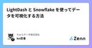
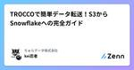

ちゅらデータ株式会社のフィード
https://zenn.dev/p/churadata
沖縄に「最高に面白い仕事」を作る IT ベンチャーです！ エンジニア積極採用中！！
フィード

Frosty Friday Week122 Easy Group by grouping sets
ちゅらデータ株式会社のフィード
こんにちは！ がく＠ちゅらデータエンジニアです。https://qiita.com/advent-calendar/2024/frostyfridayこちらの7日目の記事になります。 Frosty Friday Week122 Easy Group by grouping setshttps://frostyfriday.org/blog/2024/12/06/week-122-easy/こちらのチャレンジになります。※難易度のBasicとEasyが混在してるのが気になるなぁ・・・ｗ※どうも、ソフィア・ピエリニさんが作ってるお題の場合は、Easyになってるかもしれない...
1日前

Frosty Friday Week2 Intermediate Streams
ちゅらデータ株式会社のフィード
こんにちは！ がく＠ちゅらデータエンジニアです。https://qiita.com/advent-calendar/2024/frostyfridayこちらの6日目の記事になります。 Frosty Friday Week2 Intermediate Streamshttps://frostyfriday.org/blog/2022/07/15/week-2-intermediate/こちらのチャレンジになります。 Week2のチャレンジの内容人事部の担当者は、変更管理をしていきたいと考えています。しかし、作成したSTREAMが、関係ないものも拾ってしまっていると考え...
1日前

Frosty Friday Week1 Basic External Storage
ちゅらデータ株式会社のフィード
こんにちは！ がく＠ちゅらデータエンジニアです。https://qiita.com/advent-calendar/2024/frostyfridayこちらの5日目の記事になります。 Frosty Friday Week1 Basic External Storagehttps://frostyfriday.org/blog/2022/07/14/week-1/こちらは、2022年7月に、Frosty Fridayの最初のチャレンジです。ここから始まったんですね！！チャレンジ内容は、凄くシンプルで、「外部テーブルからデータを読み込んで、テーブルにロードしましょう！」...
3日前

Frosty Friday Week30 Basic SnowSQL and Scripting
ちゅらデータ株式会社のフィード
こん◯◯は！ がく＠ちゅらデータエンジニアです。https://qiita.com/advent-calendar/2024/frostyfridayFrosty Friday 4日目の記事です。 Frosty Friday Week30 SnowSQL and Scripting今回はSnowSQLを使って、環境構築を行うチャレンジです。※Terraformでやれるよなーーって思いながらやってました（笑）https://frostyfriday.org/blog/2023/01/20/week-30-intermediate/こちらがチャレンジの内容になります。先日、...
4日前

Denoではじめる楽しいWeb開発 5
5
ちゅらデータ株式会社のフィード
概要この記事の対象者:Denoについて知りたい人。noejsの代わりの新しいフレームワークを探している人。この記事の内容:Denoの背景、特徴、インストール方法、およびDeno Deployを使用したウェブアプリケーションのデプロイ方法の解説している。この記事を読んでわかること:Denoを用いたディプロイ方法がわかる。 序説みなさん、web開発生活楽しんでますでしょうか？ご存知のように、Web開発の世界は常に進化し続けています。Node.jsの登場以来、JavaScriptバックエンド開発は大きく変わってきましたが、新たな選択肢として「Deno」が注目を集めてい...
4日前

GPT4vを用いたandroidアプリin Kotlin
ちゅらデータ株式会社のフィード
序説沖縄のビーチは、地元の人々にとって泳ぐ場所ではなく、むしろBBQを楽しむ場所である。これは、滋賀出身の私にとっても理解しやすい感覚だった。琵琶湖で泳がずにBBQをするのと同じようなものだ。ある日、私はビーチパーティの幹事を任され、参加者を集めるために「ビーチパーティ１番楽しみにしてきた人選手権」を企画することにした。参加者には、最もビーチパーティらしい服装で来るように呼びかけ、その中で一番の人には豪華な権利を贈呈することにしたのだ。しかし、問題が一つあった。どうやってその「一番」を判定するか？人間の目ではどうしても主観が入ってしまう。そこで、私は一計を案じた。AI...
5日前

Frosty Friday Week117 Snowflake CLI
ちゅらデータ株式会社のフィード
こんにちは！ がく＠ちゅらデータエンジニアです。https://qiita.com/advent-calendar/2024/frostyfridayこちらの3日目の記事になります。 Frosty Friday Week117 Basic Snowflake CLI今回はSnowflake CLIのチャレンジですhttps://frostyfriday.org/blog/2024/11/01/week-117-basic/先日、Frosty Friday Live Challenge Vol.14 にてSnowSQLをやったのですが、その差とかなかなか面白かったですね！...
5日前

LightDash と Snowflake を使ってデータを可視化する方法 1
ちゅらデータ株式会社のフィード
概要この記事の対象者:データ分析やBIツールに興味がある人。LightDashに興味ある人。この記事の内容:LightDashの特徴とインストールから初期設定、dbtのセットアップ、グラフ作成までのハンズオン手順を紹介。この記事を読んでわかる事:LightDashの基本的な使い方と設定方法、dbtとの連携方法、データの可視化手順が理解できる。 LightDashについてLightDashのホームページを見てみます。https://www.lightdash.com/LigthDashは簡単に言うと、dbtのためのBIプラットホームですデータの可視化と分析を簡...
6日前
Frosty Fridayの紹介〜写経のすゝめ〜
ちゅらデータ株式会社のフィード
こんばんわ！がく＠ちゅらデータエンジニアです。今年もやってまいりました、アドベントカレンダーの季節！とち狂ったのか、FrostyFridayOnlyのアドベントカレンダーを立ててしまうという暴挙に及んでしまいましたｗhttps://qiita.com/advent-calendar/2024/frostyfridayこちらは、Frosty Friday Advent Calendar 2024の一日目の記事になります。 Frosty Friday って知ってますか？Frosty Fridayとは、「Snowflakeユーザが、Snowflakeユーザのために作成し、Sno...
7日前

TROCCOで簡単データ転送！S3からSnowflakeへの完全ガイド
ちゅらデータ株式会社のフィード
概要この記事の対象者:「とろっこ」って何？という人。TROCCOに興味あり触ってみたい人。この記事の内容:TROCCOを使用してAmazon S3からSnowflakeにデータを転送する手順を詳細に解説。この記事を読むとわかること:TROCCOのアカウント登録から、S3とSnowflakeの接続設定、データ転送の実行方法までの具体的な手順が理解できる。 序説みなさん、TROCCOはご存知でしょうか？TROCCOは、primeNumber社が運営する日本発のデータ基盤構築・運用の支援SaaSです。https://primenumber.com/troccoTRO...
7日前

dbt Tokyo Meetup #10 レポート
ちゅらデータ株式会社のフィード
こんにちわ！がく＠ちゅらデータエンジニアです久々に、オフラインイベントに参加してきたました。参加してきたのは、dbt Tokyo Meetup #10https://www.meetup.com/ja-JP/tokyo-dbt-meetup/events/303873810/今回は、dbtCloud の話題に関するパネルディスカッションが主な話題先日、開催された dbt Coaleasce 2024（発音できないｗ）の話題も入ってきてとても楽しい時間を過ごせましたずっとTwitterなどでは存じ上げていた方々にもリアルでお会いできて、dbt談義に花を咲かすことができて、とて...
1ヶ月前
Frosty Friday Week21 Basic Pivoting
ちゅらデータ株式会社のフィード
ちょっと涼しくなってきましたね！がく＠ちゅらデータエンジニアです。またブログの期間が空いてしまいました・・・がんばるぞー Frosty Friday Live Challenge Vol.10https://www.youtube.com/watch?v=H6ptHflxv88&t=1247sこちら（20:47）から解説がはじまっています Frosty Fridayhttps://frostyfriday.org/blog/2022/11/04/week-21-basic/問題新しいインターン生にデータ収集を任せたのは私たちのせいかもしれませんが、Super...
3ヶ月前
Icebergについて調べてみた
ちゅらデータ株式会社のフィード
概要対象者: データエンジニアやデータサイエンティストなど、ビッグデータを効率的に扱いたい技術者。内容: Apache Icebergの基本的な特徴と機能（ACIDトランザクション、スキーマ進化、テーブルスナップショット）について解説。記事を読むとわかること: Icebergの基本的な機能とその利点、具体的な使用例やコードサンプルを通じて、どのようにデータの整合性やスキーマ変更、過去のデータ参照が可能かが理解できる。 序章Icebergについて調べる機会があり、ざっくりとまとめてみました。詳しくはこちらドキュメントを読んでください。 Apache Icebergのド...
3ヶ月前
Frosty Friday Week102 Intermediate Snowpark Pandas
ちゅらデータ株式会社のフィード
がく＠ちゅらデータエンジニアです！現在、Frosty Friday Live Challangeとして、最初からやっていますが、Week100到達！ってことで、最新のチャレンジもちょこちょこやっていこうかなって思ってます。https://frostyfriday.org/blog/2024/07/19/week-102-intermediate/ Week102 Intermediate Snowpark Pandas問題(Google翻訳そのままなのでご容赦下さいSnowpark Pandas! ついに、分散型 Snowflake システムで使い慣れたよく知られた構文を使用...
4ヶ月前
Slack通知（デコ版）を作ってみる〜Webhook Notification版
ちゅらデータ株式会社のフィード
がく＠ちゅらデータです。以前にhttps://zenn.dev/churadata/articles/a553092387708bという記事にて、Slack通知（デコ版）を書かせていただきました。最近、https://docs.snowflake.com/en/user-guide/notifications/webhook-notificationsという機能が発表されました。こちらを使うとより簡素にかけるようになる事が期待できます。実際にやってみましょう Slack Webhook のシークレットを作成するhttps://api.slack.com/messag...
4ヶ月前
TiDBの始め方
ちゅらデータ株式会社のフィード
概要対象者:データベースの技術に興味があるエンジニアや開発者内容:オープンソースの分散SQLデータベース「TiDB」の特徴、HTAPの概念、実際の導入手順やチュートリアルの紹介記事を読むとわかること:TiDBの基本的な特徴と利点、HTAPの概念、分散SQLデータベースの仕組み、実際の導入手順とチュートリアルの流れ 序章みなさんTiDB（「たいディービィー）はご存知でしょうか？TiDBは何と言っても、ハイブリッドトランザクションおよび分析処理 (HTAP) ワークロードをサポートするオープンソースの分散 SQL データベースです。今日はその導入の紹介をします。h...
4ヶ月前
Frosty Friday Live Challenge Vol.7 Week15 & Week16
ちゅらデータ株式会社のフィード
がく＠ちゅらデータエンジニアです！Frosty Fridayをやる深夜RADIO的な番組をやっています。もうVol.7になりました♪一緒にメインMCをやってるのが、Tableau DataSaber時代からの友達の @tomowk1 さん♪ Frosty Fridayとはhttps://frostyfriday.org/2022年07年に最初のお題が投稿されたSnowflakeのスキルアップを目的とした学習コンテンツです。1週間〜2週間に一度、Snowflakeに関するお題が出題されます。レベル的には、初級、中級、上級があります。Frosty Fridayへの参加方法は...
4ヶ月前
NTTドコモの無料エンジニア育成プログラム体験記
ちゅらデータ株式会社のフィード
概要対象者:無料のエンジニア育成プログラムやゲーム開発に興味がある人内容:NTTドコモのX-Tech Bridgeプログラムに参加し、メタバース3Dゲームを作成した体験記と成果報告記事を読むとわかること:X-Tech Bridgeプログラムの概要、参加方法、プログラム中に作成したメタバースゲームの具体的な内容や技術的な実装方法 序説NTTドコモの無料エンジニア育成プログラムに参加していましたその感想と成果を記録したいと思いますhttps://42tokyo.jp/landing/x-tech_bridge/ X-Tech Bridge2月にX-techに応...
4ヶ月前
Frosty Friday Week101 - Easy Insert (Multi-table)
ちゅらデータ株式会社のフィード
がく＠ちゅらデータエンジニアです！現在、Frosty Friday Live Challangeとして、最初からやっていますが、Week100到達！ってことで、最新のチャレンジもちょこちょこやっていこうかなって思ってます。https://frostyfriday.org/blog/2024/07/05/week-100-hard/ Week101 - Easy Insert (Multi-table)問題Week101_Easy_Insert_multi_tableやあ、仲間！Pirate SQL チャレンジへようこそ！あなたの使命は、悪名高い海賊とその財宝のデータを管理...
5ヶ月前
口癖チェッカーを作ろう！Next.jsで簡単に音声認識アプリを開発
ちゅらデータ株式会社のフィード
概要この記事の対象者: 発言の癖を改善したい人。記事の内容: Next.jsを使った特定の言葉をカウントするアプリの作成方法。記事を読むとわかること: Next.jsとreact-speech-recognitionを使った音声認識アプリの実装方法。 序説えーっと、最近話すときに「えーっと」と言いすぎているということに悩んでいます。友達同士とかなら問題ないですが、人前で話すときに限ってテンパってしまい頻発してしまう性分です。思い切って相談すると、ある人からはその言葉をカウントしてみてはどうだろうかと。ある人からカウンターを作ってみてはどうだろうかと言ってくるわけで...
5ヶ月前